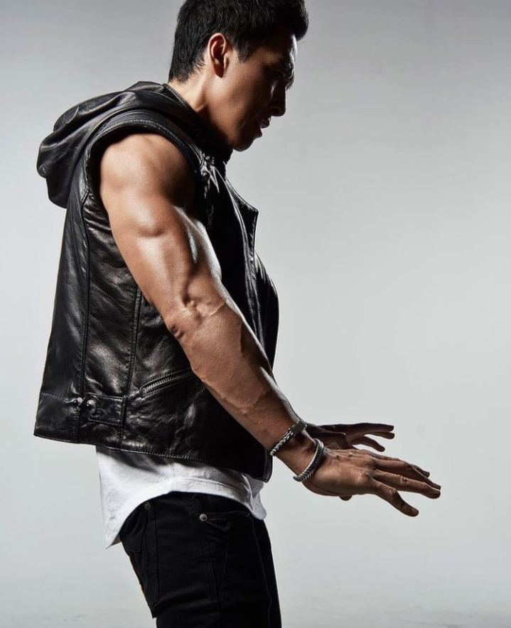
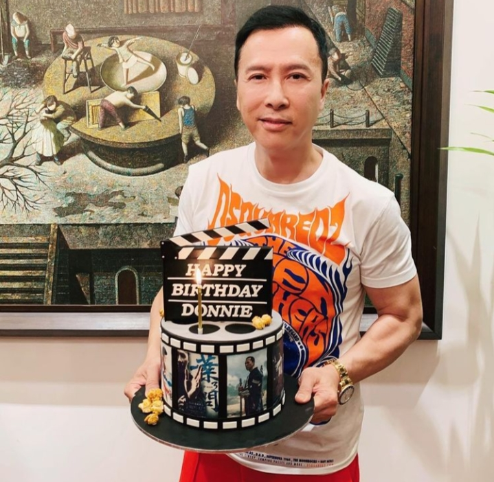
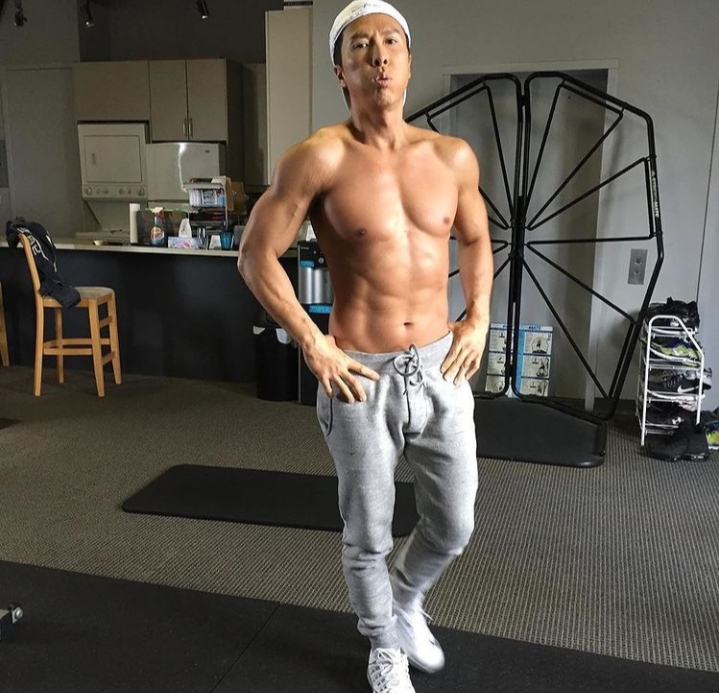
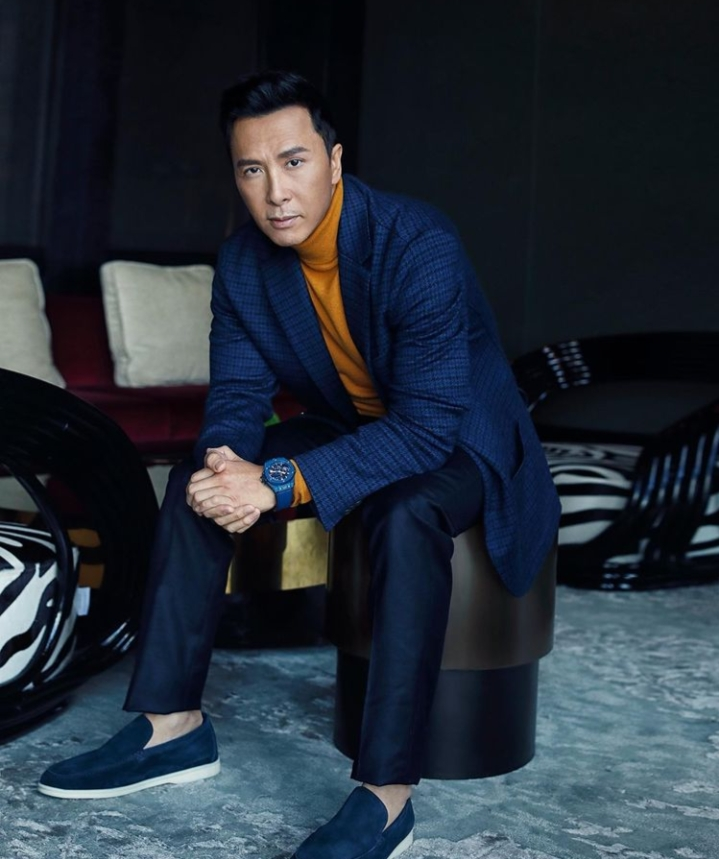
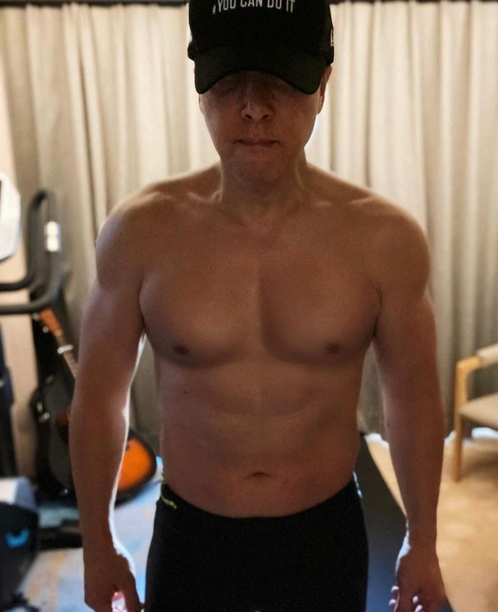
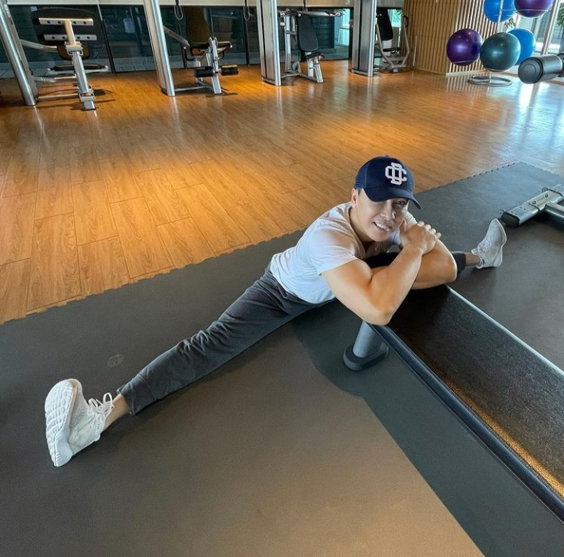

Donnie yen
is a Hong Kong actor, martial artist, film director, producer, action choreographer, stuntman, and multiple-time world wushu tournament champion
movies
awards
-
Hong Kong Film Award for Best Action Choreography - 2014
Special ID
-
Hong Kong Film Award for Best Action Choreography - 2012
Dragon
-
Hong Kong Film Award for Best Action Choreography - 2011
The Legend of Chen Zhen
-
Hundred Flowers Award for Best Actor - 2010
bodyguards and assassin's
-
Hong Kong Film Award for Best Actor - 2009
Ip Man
-
Hong Kong Film Award for Best Action Choreography - 2008
Flash Point
-
Hong Kong Film Award for Best Action Choreography - 2007
Dragon Tiger Gate
-
Hong Kong Film Award for Best Action Choreography - 2006
Kill Zone - S.P.L.
-
Hong Kong Film Award for Best Action Choreography - 2004
The Twins Effect
-
Hong Kong Film Award for Best Supporting Actor - 1993
Once Upon a Time in China II
gallery





